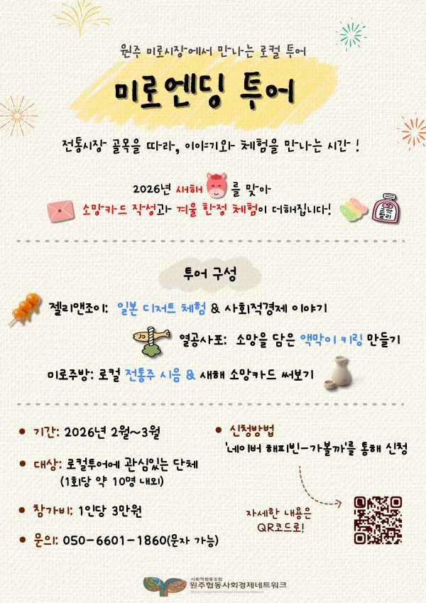

원주협동사회경제네트워크는 원주 지역 사회적경제 조직들과 함께 공동 사업·협업 프로그램을 통해
지역 안에서 지속 가능한 협업 모델을 만들어가고 있습니다.
이러한 활동의 일환으로,
2025년부터 전통시장과 지역 사회적경제 현장을 연결해
이야기·맛·체험을 함께 만나는 로컬 투어 「미로엔딩」을 운영하고 있습니다.
본 투어는 원주 미로시장 일대에서 사회적경제 기업 3곳을 중심으로 진행됩니다.
젤리앤조이(다문화 카페)에서 일본식 전통 디저트 체험 / 원주문화관광협동조합 무지개
열공사포에서 나만의 소망을 담은 액막이 키링 만들기 체험 / 열공사포(주)
전통시장 안 숨은 공간 ‘미로주방’에서 전통주 대통령상 수상작 ‘모월’ 시음 / (주)프로젝트집
[운영 안내]
- 10인 단체 전용
- 일정 협의 가능
- 총 소요시간 약 3시간
이번 시즌에는 「미로엔딩 : 겨울의 안부」✨ 신년특집으로,
소망카드 작성과 겨울 한정 체험이 더해진 프로그램으로 운영되며,
2~3월 한정으로 네이버 해피빈 ‘가볼까’를 통해 신청을 받고 있습니다.
자세한 프로그램 구성과 신청 방법은 아래 링크를 참고해 주세요.
사회적경제의 가치를 경험으로 연결하는 프로그램인 만큼,
연계 가능한 기관이나 단체에 함께 공유해 주시고, 홍보해 주시면 감사하겠습니다.
문의는 아래의 메일 및 번호로 연락 부탁드립니다. 감사합니다.
사회적협동조합 원주협동사회경제네트워크
☎ 문의전화: 050-6601-1860 (문자 가능)
✉︎ 문의메일: sunmoon202523@gmail.com
* 본 메일과 번호는 네트워크 탐방을 위한 전용 연락처 입니다.